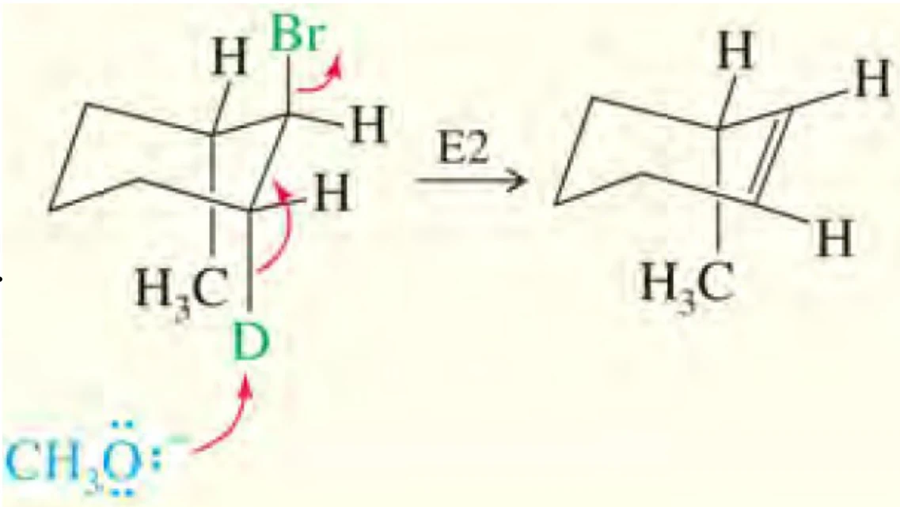

SYNTHESIS TOPIC · SUBSTITUTION & ELIMINATION
SN1 / SN2 / E1 / E2
取代与消除总结
四条路径 · 条件竞争 · 立体结果 · 产物判断
◆.1 · THE FOUR PATHWAYS
先把四条路径放到一张图景中
取代是在反应碳上用亲核基团替换离去基团；消除是从相邻碳移走 H 与离去基团，建立 π 键。以下以普通饱和卤代烷为主要对象，X 代表离去基团，Nu 代表亲核体，B 代表碱。先标出连接 X 的 α 碳，再标相邻的 β 碳；不要把分子主链编号与 α、β 的相对位置混淆。
S 表示取代，N 表示亲核，E 表示消除；数字 1、2 对应经典机理的单分子或双分子特征，与其简单速率方程一致，并不是“总共一步、两步”。SN1 可以包含电离、捕获、去质子化三步，SN2 的成键与断键反而在同一个基元步骤完成。
| 比较点 | SN1 | SN2 | E1 | E2 |
|---|---|---|---|---|
| 反应本质 | 先电离，再亲核捕获 | 背面进攻与离去协同 | 先电离，再失 β-H | 夺 β-H、成 π 键、离去协同 |
| 简单速率式 | v=k[RX] | v=k[RX][Nu] | v=k[RX] | v=k[RX][B] |
| 碳正离子 | 有，可能重排 | 无，不作普通正离子重排 | 有，可能重排 | 无，不作普通正离子重排 |
| 关键条件 | 能电离，稳定正离子 | 背面可接近，亲核进攻有效 | 能电离，并有可脱 β-H | 有碱、β-H 及合适几何 |
| 立体化学 | 常部分外消旋 | 反应中心几何翻转 | 不要求原 H/X 同时 anti | 通常要求 H/X 反式共平面 |
表中的速率式是教学中常用的理想模型，省略了固定介质、温度和活度影响。它们帮助识别控制步骤，不能单靠一个反应级数就唯一确定机理。
在取代与消除产物并存时，不能说一个分子同时以完整 SN1 和完整 E1 变成同一个终产物；不同分子或不同中间体沿竞争分支消耗。题目要求主机制时，是判断给定条件下较占优势的通道，少量副产物并不自动推翻这一判断。
来源：Organic Chemistry I Lect. 9 (Chapter 6-1)，23–29页；Organic Chemistry I Lect. 10 (Chapter 6-2)，23–26、48页；Organic Chemistry I Lect. 11 (Chapter 6-3)，6、20、37页。
◆.2 · BIMOLECULAR SUBSTITUTION
SN2：一次背面进攻，几何构型翻转
亲核体的电子对从 C–X 键背面进攻碳，C–Nu 键部分形成时 C–X 键部分断裂，两者经过同一个过渡态。完整箭头从 Nu 的孤对电子指向反应碳，再从 C–X 键指向 X。能量图只有一个主要峰，没有可供氢迁移或甲基迁移的碳正离子能谷。

反应中心的三个保留基团像雨伞翻转，称 Walden inversion。若该碳是手性中心，就应画出翻转后的空间关系；随后重新排 CIP 优先级。几何翻转并不保证名称一定从 R 变 S，因为 Nu 替换 X 后优先顺序可能改变。
普通底物的可接近性大致为甲基优于伯碳，再到部分仲碳；叔碳通常不能进行常规 SN2。还要检查邻位支化：新戊基卤虽属伯卤，背面通道仍被相邻的大基团遮挡，SN2 很慢。反应中心必须按“连 X 的那个碳”分类，不能看分子整体有几个支链。
若 Nu 是中性 NH3 或 ROH，第一步取代产物可带正电，后面还可有去质子化。这不把碳上的协同取代改称 SN1；机制名称依据关键的碳中心成键、断键过程，而不是把整个反应瓶里的所有质子转移都计入数字。
来源：Organic Chemistry I Lect. 9 (Chapter 6-1)，23–29页；Organic Chemistry I Lect. 10 (Chapter 6-2)，13–20页。
◆.3 · UNIMOLECULAR SUBSTITUTION
SN1：电离之后，捕获与重排竞争
第一步 C–X 键异裂，成键电子对全部留给 X，产生碳正离子及离去基团；随后亲核体进攻。若进攻物是 H2O 或 ROH，直接生成的通常是氧鎓离子，还需去质子化，才能得到中性醇或醚。经典模型中电离为慢步骤，因此速率主要取决于底物浓度。

常见简单烷基正离子稳定性为三级高于二级，普通一级和甲基很不利；苄基、烯丙基还可受到共振稳定。电离后应检查相邻 C–H 或 C–C 键能否带电子对迁移，形成更有利的正离子。重排改变原子连接，和只移动电子的共振完全不同。
正离子反应中心近似平面，两面都可能被进攻；但离去基团、离子对和溶剂笼会使两面不等价。因此典型 SN1 常有部分外消旋及一定翻转偏好，不可一律写成严格 50∶50。若骨架原本还有其他手性中心，两面进攻更可能给比例不同的非对映体。
“更稳定的正离子”与“必须观察到重排”也不能画等号。若直接捕获足够快，或迁移受到结构限制，可得到未重排产物。作答时应列出合理迁移并说明竞争，不宜为了凑一个三级正离子而跨越多根键随意移动氢或甲基。
来源：Organic Chemistry I Lect. 10 (Chapter 6-2)，23–26、30、35–44页。
◆.4 · BIMOLECULAR ELIMINATION
E2：同一步移走 β-H 与离去基团
碱进攻 β-H，Cβ–H 键电子形成 Cα=Cβ，Cα–X 键电子同时移到 X。三根弯箭头要连贯地画出电子来源与去向，不要先写游离碳正离子，再把它称作 E2。对于简单烷基卤，E2 通常需要强碱，速率同时依赖底物和参与夺氢的碱。

先数每个相邻 β 碳有没有氢，再分别画可能双键。甲基卤没有 β 碳，不能发生这种 β 消除；新戊基卤的相邻季碳没有 β-H，也不能因为“加入强碱”就强行写一个普通 E2 烯烃。
E2 是协同反应，但各根键不必恰好同时变化到相同程度。“没有中间体”与“完全同步”是两个概念。常规判断中不安排碳正离子重排；若题目明确涉及其他特殊消除机理，应另行分析。
β-H 的酸性和碱的体积都影响过渡态，但普通卤代烷的 E2 不要求先由碱完全去质子化成稳定碳负离子。若把夺氢和离去画成两个有独立中间体的步骤，已经换了机理，需要额外的结构与实验证据支持。
来源：Organic Chemistry I Lect. 11 (Chapter 6-3)，18–23、26页；Org. Chem. Lect. 14 (Chapter 7-2)，18–23页。
◆.5 · UNIMOLECULAR ELIMINATION
E1：与 SN1 共用碳正离子入口
E1 先电离形成碳正离子，随后溶剂或其他碱从相邻碳移去质子，C–H 键电子形成 π 键。它与 SN1 的分叉发生在电离之后：亲核体进攻正离子碳给取代产物，碱夺 β-H 给消除产物。水和醇虽是弱碱，也可完成这一步，因为正离子失去质子可恢复中性。

有正离子就要检查重排；没有合适 β-H 就没有相应消除产物。E1 中 X 已在前一步离去，不要求原来的 C–X 与 C–H 必须同时反式共平面，但生成 π 键仍需相关轨道适当排列，分子的环约束也不会凭空消失。
常见 E1 偏向较稳定、取代较多的烯烃，也可能有共轭、环张力或重排的影响。SN1 与 E1 常一起发生，应列出合理的两类产物；升温经常提高消除比例，但不能把“加热”单独当成指定 E1 或 E2 的充分条件。
来源：Organic Chemistry I Lect. 11 (Chapter 6-3)，6–17、37、44页。
◆.6 · NUCLEOPHILICITY VS BASICITY
亲核性与碱性：先问它进攻哪里
亲核性描述进攻亲电碳等中心的反应快慢，是动力学性质；碱性描述接受质子的平衡倾向。比较碱性常参考共轭酸的 pKa，但必须注意溶剂与比较条件。一个试剂可以同时是亲核体与碱，不能把“带负电”直接翻译成“只发生取代”。
| 试剂类型 | 常见成员 | 用于判断的重点 |
|---|---|---|
| 较好亲核体、相对弱碱 | I−、Br−、N3−、CN−、RS− | 对可接近的甲基、伯卤及合适仲卤，常利于 SN2；强弱仍依赖介质 |
| 强碱、也能亲核进攻 | HO−、MeO−、EtO− | 伯卤常可取代，仲卤常明显竞争，叔卤通常走 E2 |
| 体积大的强碱 | t-BuO− | 进攻受阻碳困难，夺取可接近 β-H 较有利，常促 E2 |
| 弱亲核体、弱碱 | H2O、ROH | 底物易电离时可见 SN1/E1；不能令普通伯卤自动生成稳定正离子 |
叔丁氧负离子是强碱，但其体积降低了进攻受阻碳的效率；乙氧负离子不能简单叫“弱碱”，它同样可高效促消除。还应区分中性胺与金属酰胺：二异丙胺不是二异丙基氨基锂 LDA，两者不可仅因名称相近而套用相同碱性。
来源：Organic Chemistry I Lect. 9 (Chapter 6-1)，33–44页；Organic Chemistry I Lect. 11 (Chapter 6-3)，38–45页。
◆.7 · SUBSTRATE DECISION MATRIX
底物矩阵：级数是入口，不是最终答案
| 底物 | 优先考虑 | 必须加上的限制 |
|---|---|---|
| 甲基卤 CH3X | 有效亲核体下 SN2 | 无 β-H，不能普通 E1/E2；普通 SN1 极不利 |
| 普通伯卤 | 好亲核体下常 SN2；大体积强碱可 E2 | 需有 β-H；邻位支化会拖慢 SN2 |
| 仲卤 | SN2/E2 竞争；能有效电离时也可能 SN1/E1 | 亲核性、碱性、介质与温度都要看，不能仅凭“仲”定机制 |
| 叔卤 | 强碱下 E2；易电离的弱亲核介质下 SN1/E1 | 常规 SN2 受阻；消除仍须 β-H 与可达几何 |
| 苄基、烯丙基卤 | 可因共振促进 SN1 或 SN2 | 具体取决于反应中心取代度及条件，不是只能走 SN1 |
| 乙烯基卤、芳基卤 | 先退出普通卤代烷四机制矩阵 | X 直接连 sp2 碳；芳香亲核取代等另有机制 |
苄基是 Ph–CH2–，芳基则是卤素直接接芳环，二者不能混用。烯丙位也指双键旁的饱和碳，而不是双键上的乙烯基碳。看清 C–X 的实际连接位置，往往比背完整的活性顺序更有用。
来源：Organic Chemistry I Lect. 10 (Chapter 6-2)，13–16、27–30页；Organic Chemistry I Lect. 11 (Chapter 6-3)，38–45页。
◆.8 · CONDITIONS AND KINETICS
离去基团、溶剂、温度与浓度
普通烷基卤常见离去能力 I− > Br− > Cl− ≫ F−；同时还受底物和介质影响。OH− 通常不是好离去基团，醇可先质子化，使水离去，或先转成适当衍生物。不能把强酸与 HO− 任意并列而忽略先发生的酸碱中和。
极性质子溶剂如水、醇可氢键溶剂化阴离子，常降低许多阴离子的 SN2 活性，也可稳定电离相关的离子。DMSO、DMF、乙腈等极性非质子溶剂常有利于阴离子亲核体进行 SN2。但溶剂不是机制开关：叔卤不会因换到 DMSO 就顺利 SN2，普通伯卤也不会因加水就可靠地 SN1。
卤离子的亲核性次序依赖溶剂，不能把质子介质下的排序当成所有条件的普遍规律。温度升高会改变各条路径的速率和竞争比例，必须与碱及底物一起判断；“低温取代、高温消除”只能作为有条件的经验。
在简单模型中，固定其他条件，底物加倍使四条路径速率均加倍；Nu 加倍可使 SN2 加倍，碱加倍可使 E2 加倍。若同一阴离子同时引发 SN2 与 E2，二者都对它一阶，仅提高其浓度未必改变两者比例。SN1 的电离速率不直接含 Nu，却不表示捕获、重排、E1 分支的产物比例永不受 Nu 浓度影响。
比较浓度效应还要保持介质条件相近：大量改变溶剂、盐含量或温度时，速率常数也会变化，不能再只用浓度倍数机械缩放。实验上过量 Nu 近似恒定，SN2 也可表现为对底物的拟一级行为，不能因此直接命名为 SN1。
来源：Organic Chemistry I Lect. 9 (Chapter 6-1)，25、37–44页；Organic Chemistry I Lect. 10 (Chapter 6-2)，11、24–26、33–37页；Organic Chemistry I Lect. 11 (Chapter 6-3)，37–45页。
◆.9 · ANTI PERIPLANAR & TRANS DIAXIAL
E2 立体化学：先满足几何，再谈主产物
多数普通 E2 最有利的排列是 β-H 与离去基团反式共平面（anti periplanar），沿 Cα–Cβ 观察时二面角约 180°。这使 C–H 成键轨道与 C–X 反键轨道有效重叠，并有利于形成 π 键。特殊刚性体系可能发生 syn 消除，但不能据此跳过常规 anti 检查。

开链可绕单键旋转寻找反应构象；旋转只改变构象，不改变已有手性中心的构型。摆到 anti 后再读取保留取代基位于双键的哪一侧，并按 CIP 判定 E/Z。anti 消除不是“永远生成 E 烯烃”；不同非对映底物可分别给 E 或 Z。
环己烷椅式中的常规 E2 要求离去基团与邻碳上的 β-H 反式双轴：一个轴向上，另一个轴向下。若 X 为赤道键，通常需先翻椅到轴向；翻椅交换轴向、赤道向，却保持每个基团的上、下属性。随后逐侧检查邻碳轴向位置究竟是 H 还是取代基。

例如反式-1-溴-2-甲基环己烷在 Br 轴向的椅式中，邻位甲基也轴向，占据本可作 anti 消除的氢位置，因而不能在该侧生成更取代双键，只能从另一侧有轴向 H 的 β 碳消除。几何可达性优先于“多取代更稳定”的经验。
来源：Organic Chemistry I Lect. 11 (Chapter 6-3)，26–31页；Org. Chem. Lect. 14 (Chapter 7-2)，23–28页。
◆.10 · REGIOSELECTIVITY OF ELIMINATION
Zaitsev 与 Hofmann：比较允许形成的烯烃
Zaitsev 取向通常指偏向较多取代的烯烃；Hofmann 取向指偏向较少取代的烯烃。小体积碱进行常规消除时，前者常见；体积大碱较易接近拥挤较少的 β-H，可提高后者比例。判断对象是双键两端直接连的碳取代基，不是整条主链有多长。
2-溴-2-甲基丁烷的可消除位点可给 2-甲基丁-2-烯或 2-甲基丁-1-烯；乙氧基条件常偏向前者，叔丁氧基条件常提高后者。它们是区域异构体；若某个产物的双键碳连两个相同基团，就不再指定 E/Z。
这些是趋势，不是产物唯一性承诺。先排除没有 β-H 或不满足几何的路径，再比较位阻、共轭、环张力和试剂条件。E1 常偏较稳定烯烃，也不等于所有消除反应都先平衡到最稳定产物。
来源：Organic Chemistry I Lect. 11 (Chapter 6-3)，22–23、32–37页；Org. Chem. Lect. 14 (Chapter 7-2)，21–28页。
◆.11 · WORKED COMPARISONS
六组对照：把判据落实到产物
| 给定条件 | 判断与主要结构 | 检查点 |
|---|---|---|
| CH3Br＋N3−，DMSO | SN2 → CH3N3 | 甲基无 β 碳，普通 β 消除不成立 |
| 1-溴丁烷＋CN−，合适非质子介质 | 常 SN2 → CH3CH2CH2CH2CN | 以 C 端进攻时为戊腈，腈碳使总碳数增加一 |
| 2-溴丁烷＋EtONa，乙醇并加热 | 常 E2 重要，也有 SN2 竞争；消除可得 1-丁烯与 E/Z-2-丁烯 | 不无条件给固定百分数；在常见条件下 2-丁烯常较多 |
| 叔丁基溴＋EtONa | E2 → 2-甲基丙烯 | 叔碳排除常规 SN2；有 β-H |
| 叔丁基溴＋水，适当溶剂解条件 | SN1 → 叔丁醇；E1 → 2-甲基丙烯 | 先电离后分支，温度等影响比例 |
| 2-溴-2-甲基丁烷＋t-BuOK | E2；常提高 2-甲基丁-1-烯比例 | 大体积碱倾向较可接近的 β-H，仍可能混合 |
条件不完整时，写出合理竞争路径，比硬选“百分之百某机理”更准确。若题目要求唯一主产物，应明确自己所用的试剂、溶剂、温度和构象前提，而不是把例题比例挪到另一套条件。
来源：综合上述课件判据编写的对照例题；原始机理见第10–12课及第15课。
◆.12 · A PRACTICAL CHECKLIST
做题顺序与易错点自检
- 定位反应中心：圈出 C–X，区分甲基、伯、仲、叔及苄基、烯丙基；先排除不适用的芳基、乙烯基情况。
- 检查基本条件：离去基团是否足够好？有哪些 β-H？碳正离子是否有合理稳定化？背面通道是否被挡住？
- 识别试剂行为：分别判断亲核性、碱性及体积，再加入溶剂和温度，保留可能竞争的路径。
- 画机理后画产物：SN1/E1 查重排；SN2 查翻转；E2 查 anti 与环己烷双轴；最后判断区域选择与 E/Z。
- 核对账目：元素数、总电荷、碳四价、产物编号；CN 等试剂带入的碳不能漏计。
只测速率能否区分四种机制？
不能完全区分。SN1 与 E1 的简单速率式相同，SN2 与 E2 也可能有相同总级数。还需结合产物类型、立体结果、重排、条件及必要的同位素效应等证据。
看到重排，是不是必定 SN1？
重排支持存在可重排中间体，但 E1 也经过碳正离子。必须先看最终得到取代物还是烯烃；同一次反应还可能同时出现两类。
看到强亲核体，是不是必定 SN2？
先看底物可否背面进攻。强碱兼强亲核体遇到仲卤可能 SN2/E2 竞争，遇到叔卤通常更应考虑 E2。反应标签不能代替结构检查。
复习可回到 第10课：亲核性与 SN2、第11课：SN1、底物效应与重排、第12课：E1/E2 与竞争、第15课：环己烷消除，本专题负责把分散判据连接起来。
SN1 和 E1 为什么不一定画同一个最终碳骨架？
二者可从相同初生碳正离子分流，但捕获、迁移及去质子化的快慢不同，产物也可能来自不同的后续中间体。每一条分支都应独立追踪；“共用入口”不等于所有分支都先完成同一套重排。
来源：第10–12、15课综合整理；专题不占课程编号。